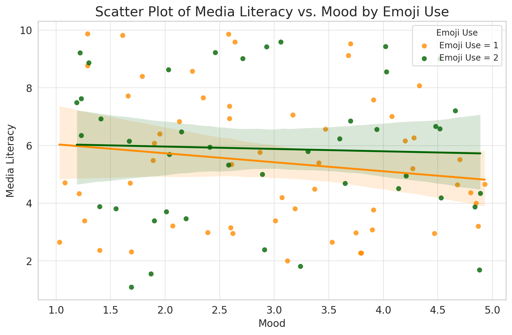
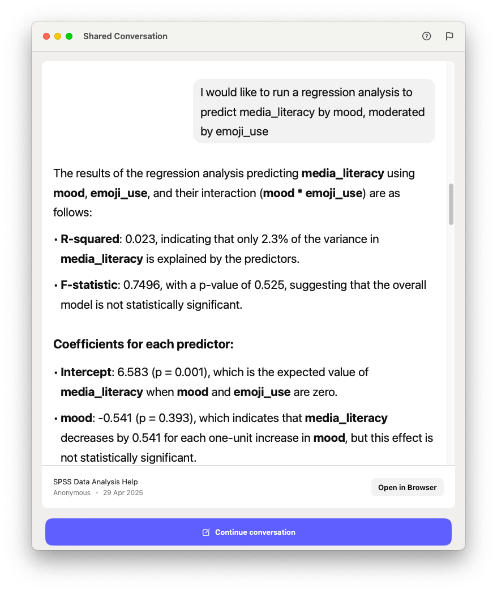
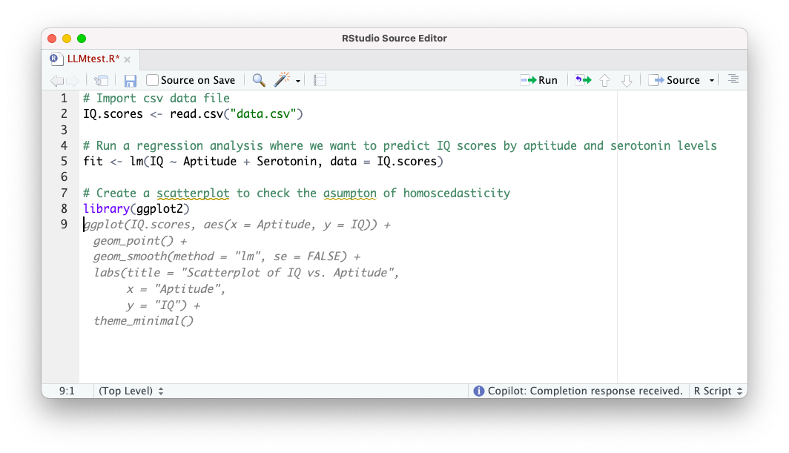
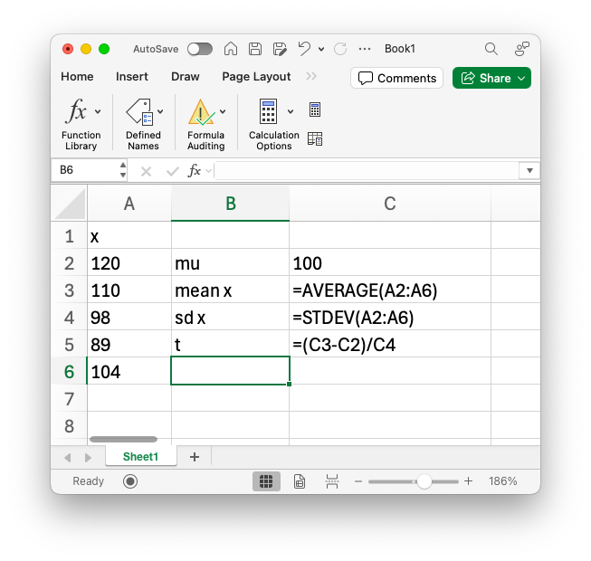
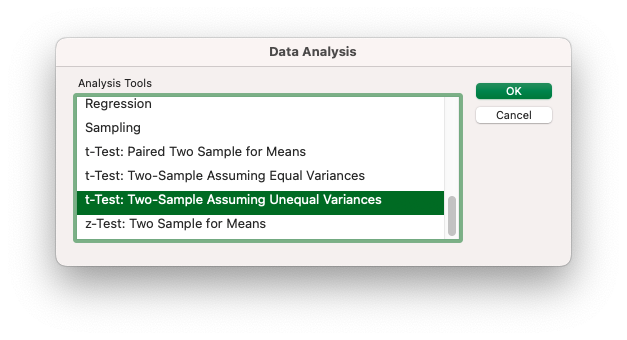

# Calculate the t value for a sample of 5 intelligence scores
x = c(120, 110, 98, 89, 104)
# Population mean
mu = 100
# Sample average and standard deviation
x.mean = mean(x)
x.sd = sd(x)
# Calculate t value
t = (x.mean - mu) / x.sdStatistical Software Options for Social Science Education
Introduction
Statistical analysis plays a critical role in social science education, equipping students with essential skills for data analysis, research, and evidence-based decision-making. Selecting the right statistical software for bachelor education is crucial to meet learning objectives, improve engagement, and prepare students for professional roles. This report outlines and evaluates several statistical software options suitable for undergraduate education, highlighting their strengths, weaknesses, and possible combinations for optimal learning outcomes.
This report was commissioned by the schools of communication science at the University of Amsterdam. The report aims to provide an overview of statistical software options and provide recommendations for implementation.
The current software used in the curriculum is SPSS, which is widely used in social science research. However, there are many other options available that may be more suitable for undergraduate education. The report will evaluate these options based on their features, advantages, limitations, and use cases.
Within the department we see a growing adoption in open-source software use, such as R and Python. The research field is also moving towards open-source software, with many researchers using R and Python for their work. This trend is likely to continue. Though considering we educate our students in the bachelor program to become scientific practitioners, we need to consider the software they will use in their future careers, which is not necessarily a scientific career.
A second consideration is the the learning curve and didactically bennefits of the software. The software should be easy to learn and use, and should provide a good balance between functionality and usability. The software should also be suitable for the level of the students, and should provide a good introduction to statistical analysis.
The third an final consideration is about a single solution versus a combination of solutions. The software should be suitable for the entire curriculum, and should provide a good introduction to statistical analysis. However, it is also important to consider the possibility of using multiple software packages in the curriculum, as this can provide students with a broader range of skills and knowledge.
In the following chapters, we will give an overview of the different software options available for undergraduate education, and provide scenarios for implementation.
Statistical Software Options
For this chapter we broadly define five categories of software, and consider some packages for each category. Though the list is not exhaustive, it focusses on the key considerations.
- Proprietary Statistical software with a graphical user interface (GUI)
- Open source statistical software with a graphical user interface (GUI)
- Open source programming languages with a command line interface (CLI)
- Proprietary Large Language Models
- OpenAI: Data Analyst GPT
- Proprietary spreadsheet
In the following chapters we will reflect on the five software categories.
Proprietary Statistical software with a graphical user interface
A general benefit of the graphical user interface software packages is that apart from the relative ease of use, the different analysis already provide multiple additional options for assumption checks, Post hoc and contrast analysis and visualizations.
And altough the software is graphical in nature, it still provides syntax for reproduction and transparency in terms of open science.
As the department is currently using SPSS, we will not go into detail about this software. Though it is worth mentioning the benefits of staying with SPSS for undergraduate education. Though many of our scientific staff are using R and Python, SPSS is still widely used in the department. A change away from SPSS would require a significant investment in time and resources in retraining employees, as well as a change in the curriculum.
A switch to STATA would not be an obvious option, as it is roughly the same as SPSS. It provides roughly the same set of analysis types including Bayesian analysis like SPSS does. It is also a proprietary software package, which means that it is not open source and requires a license to use. There seem to be no clear benefits for such a switch.
Open source statistical software
From a cost perspective, going opensource seems like a logical option, though it has to be considered that even with such a change our university would not stop paying for SPSS licenses. As these licences are procured at the national level through SURF, and other departments still sticking to proprietary software would still need access. Though a switch to open source would be beneficial to students, as they would not have to pay the reduced student licencing costs.
Liability of opensource software is often mentioned as a disadvantage, though it can be debated to what extent this really is a problem. There is usually a large community of users who can help with any issues that may arise. Though this is dependent on the popularity of the software.
Software with a graphical user interface
Both JASP and Jamovi are open source statistical software packages that provide a graphical user interface. They are both based on R, and provide a similar set of analysis types as SPSS. They are both easy to use and provide a good introduction to statistical analysis. Though JASP provides an additional suite of Bayesian analysis, and is developed and maintained at the department of Psychology of the University of Amsterdam. Jamovi is a spin-off of the JASP project and maintained by a core team of developers.
Though both are based on R and can produce syntax for the analysis that are performed, both use their own packages. For example a t test in R would be run with the function t.test(), while in JASP and Jamovi the funtions are jaspTTests::TTestIndependentSamples() and jmv::ttestIS() respectively. This means that the syntax produced by JASP and Jamovi is not directly usable in R, and vice versa. This is a disadvantage for students who want to transition to R in a masters program, as they will have to learn a different set of functions.
Both packages are still struggling with the data editor. The graphical user interface for both is not really intuitive, though both do allow to use R code in the data editor.
Statistical programming languages with a command line interface
One of the main benefits of using a statistical programming language is that it allows for more didactical use cases. Where the graphical user interface software packages are mainly used for data analysis, the programming languages can also be used for learning the intermediate steps in statistics. For example: An independent t test in a textbook is often mathematically indicated as follows.
\[t = \frac{\bar{x} - \mu}{s_x}\]
Using a statistical programming language this can be made more tangible by using code. It allows students to focus on the concepts without the fear of miscalculations.
\[\frac{\text{x.mean - mu}}{\text{x.sd}} = \frac{104.2 - 100}{11.7558496} = 0.3572689\]
This provides students the tools to understand the concepts behind the analysis, and in addition, introduces basic programming skills. For students that will only do the undergraduate program, this is a valuable help in learning statistics. And for students that will continue with a master program, this is a good introduction to programming.
Though a statistical programming language provides many benefits, as it aligns with core values like open science and transparency, it also poses some hurdles in the learning process. These are mostly related to importing data, summarizing results and visualization. With the GUI based software packages these tasks are quite trivial, but for the CLI based interfaces the many options and packages make these tasks often overly complicated. Choosing a single approach like R Tidyverse will greatly simplify the abundance of different methods.
An additional hurdle is that extensive assumptions checks are often not available in the CLI based software packages. These either need additional packages or need to be done manually. For example, for the check on homoscedasticity, the lm() function in R does not provide a check for this assumption. For this an additional package would be needed or a scatterplot with residuals and predicted values would need to be created. Though it could be argued that these additional steps enhance the skills of students.
While R provides a more statistical computing environment, Python is more a general programming environment, but with the addition of NumPy package it can be used for statistical analysis. Though additional packages like pandas is needed to work with data frames and importing data. The use of Python or R can be greatly simplified by using Jupyter Notebook, which provides a web-based interface for writing and running Python code. Jupyter Notebook allows for interactive data analysis and visualization, making it easier for students to learn and experiment with Python, without the need for installation or configuration. Though there is an argument to be made that the use of Jupyter Notebook does not provide the skills of using an integrated development environment (IDE) like RStudio or PyCharm.
Large Language Models
The use of large language models (LLMs) like ChatGPT in education is a rapidly evolving field. These models can assist students in various ways, such as providing explanations, generating code snippets, and answering questions related to statistical analysis. The integration of LLMs into educational settings can enhance the learning experience by offering personalized support and immediate feedback.
Data Analyst GPT
ChatGPT, combined with the Data Analyst GPT, offers a powerful toolset for researchers and data scientists. By leveraging natural language processing and advanced data analysis capabilities, users can seamlessly interact with their data, ask complex questions, and receive insightful analyses without needing extensive coding skills. This combination can streamline exploratory data analysis, automate repetitive tasks, and generate visualizations. See Figure 1 for an example of a moderation analysis generated by ChatGPT.


For students, this means they can focus more on interpreting results and deriving insights, rather than spending time on data wrangling and coding. The Data Analyst GPT can assist in generating statistical summaries, performing hypothesis testing, and even creating predictive models, making it an invaluable asset for both exploratory and confirmatory research. This integration empowers students to quickly prototype and iterate on their analyses, reducing the time from data collection to actionable insights.
The Data Analyst GPT leverages Python with appropriate packages to run analysis and visualizations. For all analysis the Python code is provided. But as LLM’s are probabilistic in nature, mistakes are still possible. Analysis still need to be checked, which leads to the following problem for use in education. In order to check for inaccuracies, students would need to be able to read the Python code. Hence, Python would need to be tought as a prerequisite for using LLM based solutions.
LLM in IDE
The use of large language models (LLM) in integrated development environments (IDE) like RStudio and Jupyter Notebook can significantly enhance the learning experience for students. By integrating LLMs into these environments, students can receive real-time assistance while coding, making it easier to understand complex concepts and troubleshoot issues. This interactive support can help bridge the gap between theoretical knowledge and practical application, allowing students to focus on learning rather than getting stuck on coding challenges.
Though it can also impede the learning proces as students can lean to heavyly on the LLM for coding assistance, potentially hindering their ability to develop independent problem-solving skills. This reliance can lead to a lack of understanding of the underlying principles and concepts, as students may become accustomed to receiving instant solutions without fully grasping the reasoning behind them. To mitigate this risk, it is essential to encourage students to engage with the material actively, seek explanations for the code generated by the LLM, and practice coding independently.

Figure 2 shows an example of GitHub Copilot in RStudio, where the LLM suggests code for a scatter plot in light grey. The suggested code takes the context of the previous code into account. Though, as can be seen, the comments requested a check on homoscedasticity, but the suggested code does not provide this. This shows the probabilistic nature of LLMs, and the need for students to check the code generated by the LLM. For students to use these types of integrations, they would need to be familiar with the programming language used in the IDE. This means that students would need to learn R or Python as a prerequisite for using LLMs in RStudio or Jupyter Notebook.
Spreadsheets
Using Excel to teach statistics, especially in combination with the Analysis Toolpack, offers a very accessible and practical approach for students to learn statistical concepts. Many students are already familiar with Excel’s basic functions, so they can focus more quickly on understanding statistical techniques rather than struggling with a completely new software environment. The familiarity of Excel lowers the barrier to entry and allows instructors to emphasize the interpretation of results rather than the mechanics of calculation.
The Analysis Toolpak extends Excel’s capabilities by offering ready-to-use procedures for key statistical analyses, such as descriptive statistics, correlation, regression, t-tests, and ANOVA. This enables students to perform fairly advanced analyses without needing to code or use more complex statistical packages right away. It also helps them to see the direct connection between data, formulas, and outputs, as shown in Figure 3. Students can watch calculations unfold in the spreadsheet, offering transparency that is sometimes hidden in black-box statistical software.


Moreover, Excel forces students to engage closely with the data. They often have to structure, clean, and select their datasets carefully before analysis, which teaches important data-handling skills that are crucial for real-world applications. In professional settings, many organizations still use Excel for data analysis, especially for quick insights or preliminary investigations. Learning to perform statistics in Excel therefore not only strengthens theoretical understanding but also builds practical skills that are highly valued in the workplace.
While using Excel with the Analysis Toolpak can be very beneficial, there are some critical points to watch out for. One major risk is the potential for errors when manipulating data. Excel’s flexibility means it’s easy to accidentally move, overwrite, or delete data, which can lead to incorrect results. Unlike more specialized statistical software that often locks data or provides a clear audit trail, Excel’s open editing environment makes it harder to track changes and ensure data integrity.
Another cautionary point is that Excel allows multiple data types in the same column, unlike statistical software such as SPSS, which enforces a more structured data format. This flexibility can lead to inconsistencies or errors in analysis if data types are mixed, such as combining numeric and text data in a column that should be purely numeric. This can cause issues during calculations or when using the Analysis Toolpak, as functions may return errors or unexpected results. While it’s a powerful tool for teaching and learning, these limitations mean that instructors should emphasize the importance of careful data management and double-checking results.
Combinations of Software for Optimal Learning
From a pedagogical perspective, combining different statistical software tools can enhance students’ learning experiences and prepare them for diverse career paths. In this chapter we discuss combinations based on curriculum objectives and careeer paths.
Curriculum objectives can focus on basic statistics, advanced analysis, data science, or computational social science. A main consideration is if the objectives are focused on a narrow specialization or a broad skill set. Career paths may include research, industry, or policy analysis.
The suggested combinations below are aligned with the curriculum objectives and intended career paths of students in both the bachelor’s and master’s programs. They take into account the final qualifications (end terms) of the bachelor’s program as well as those of the various master’s programs, including the research master’s. Together, the combinations outline a coherent five-year trajectory.
| # | Bachelor 1 | Bachelor 2 | Bachelor 3 | Master 1 | Master 2 |
|---|---|---|---|---|---|
| 1 | Excel + SPSS | SPSS + R | SPSS or R | SPSS or R | R + Python |
| 2 | SPSS | SPSS + R | SPSS or R | SPSS or R | R + Python |
| 3 | R | R | R | R | R + Python |
| 4 | Python | Python + LLM | Python + LLM | Python + LLM | Python + LLM |
| 4 | R | R + LLM | R + LLM | R + LLM | Python + LLM |
Recommendations
Conclusion
Appendix
Software summary
SPSS
SPSS (Statistical Package for the Social Sciences) is one of the most widely used tools in social science education. It offers an intuitive, menu-driven interface with minimal coding, making it ideal for beginners. It has been used for many years in academic research and industry, particularly in fields like psychology, sociology, and market research.
Key Features:
- User-friendly point-and-click interface
- Pre-built functions for descriptive statistics, inferential analysis, and graphical representation
- Suitable for survey data, academic research, and social science experiments
Advantages:
- Low learning curve for students
- Widely used in social science research and industry
- Assumptions checks are embedded in most of the analysis dialogue windows
Limitations:
- Proprietary software
- Limited flexibility compared to open-source tools
- The syntax is not a programming language
Use Cases:
Ideal for early bachelor-level courses where students are introduced to basic descriptive and inferential statistics.
Stata
Stata is a powerful statistical software used for data management, analysis, and graphics. It is commonly employed in economics, sociology, and political science.
Key Features:
- Command-line interface with point-and-click support
- Suitable for regression analysis, time series, and panel data
- Extensive support for large datasets and econometric modeling
Advantages:
- Strong support for social science research
- Faster processing of large datasets
- Used by academic researchers and policy analysts
Limitations:
- Steeper learning curve
- Expensive licensing model
Use Cases:
Ideal for bachelor courses in econometrics, social research methods, and policy analysis.
JASP
JASP (Jeffreys’s Amazing Statistics Program) is a free, open-source statistical software developed at the University of Amsterdam. It offers an intuitive interface for both classical and Bayesian statistical analyses, making it accessible for users familiar with SPSS .
Key Features:
- User-friendly graphical interface with real-time output updates
- Supports both frequentist and Bayesian analyses
- Wide range of statistical tests, including t-tests, ANOVA, regression, and factor analysis
- APA-style tables and plots for easy reporting
- Integration with the Open Science Framework for reproducibility
Advantages:
- Simplifies complex Bayesian analyses for non-experts
- Facilitates open science practices through OSF integration
- Free to use with active development and community support
Limitations:
- Limited data management capabilities compared to other software
- Customization and advanced data manipulation may require external tools
Use Cases:
Ideal for psychology, social sciences, and educational research courses focusing on both classical and Bayesian statistical methods.
jamovi
jamovi is a free, open-source statistical software built on top of the R language. It provides a spreadsheet-style interface, making it approachable for users transitioning from tools like SPSS .
Key Features:
- Intuitive point-and-click interface with real-time results
- Built-in support for common analyses: t-tests, ANOVA, regression, and more
- Extensible through community-developed modules
- Displays underlying R syntax for each analysis, aiding learning
- Cross-platform compatibility: Windows, macOS, Linux, and ChromeOS
Advantages:
- Bridges the gap between GUI-based analysis and R scripting
- Facilitates learning of statistical concepts and R programming
- Active community contributing to a growing library of modules
Limitations:
- Some advanced statistical methods may require additional modules
- Less emphasis on Bayesian methods compared to JASP
Use Cases:
Suitable for undergraduate courses in statistics, psychology, and health sciences, especially where an introduction to R is beneficial.
R with RStudio
R is a free, open-source programming language for statistical computing and graphics. RStudio is an integrated development environment (IDE) that enhances R’s usability.
Key Features:
- Open-source and free to use
- Extensive libraries for statistical modeling, machine learning, and visualization
- Ability to write reproducible research reports (R Markdown)
Advantages:
- Cost-effective (free and open source)
- Highly flexible with community-driven packages
- Prepares students for data science and research careers
Limitations:
- Steeper learning curve for non-coding students
- Requires familiarity with scripting and debugging
Use Cases:
Best suited for bachelor courses focusing on advanced statistical analysis, reproducible research, and data science.
Python
Python is a versatile, open-source programming language that supports a wide range of applications, including data analysis and machine learning.
Key Features:
- Rich libraries for data analysis (NumPy, pandas), visualization (Matplotlib, Seaborn), and machine learning (scikit-learn)
- Widely used in industry, academia, and data science
Advantages:
- Open-source and free to use
- Versatile language applicable to multiple fields (not just statistics)
- Prepares students for careers in data science, machine learning, and AI
Limitations:
- Steeper learning curve for students new to coding
- Students need to install and manage libraries and environments
Use Cases:
Suitable for advanced bachelor courses in data science, computational social science, and research with large, complex datasets.
Jupyter Notebook
Jupyter Notebook is an open-source web application for creating and sharing documents containing live code, equations, visualizations, and narrative text.
Key Features:
- Supports multiple languages, including Python, R, and Julia
- Interactive notebooks for collaborative research and educational materials
- Used in teaching, research, and exploratory data analysis
Advantages:
- Open-source and free to use
- Combines code, output, and explanations in one document
- Prepares students for the “notebook-style” analysis used in industry and academia
Limitations:
- May require prior coding knowledge (often paired with Python or R)
- Requires environment setup (e.g., Anaconda)
Use Cases:
Jupyter Notebooks are ideal for exploratory data analysis and teaching computational concepts interactively.
Excel
Microsoft Excel is a spreadsheet program that allows for basic statistical analysis and visualization.
Key Features:
- Intuitive, user-friendly interface
- Built-in statistical functions, pivot tables, and charting tools
- No coding required
Advantages:
- Easy to learn and widely used in the industry
- No need for additional software installations (part of Office Suite)
Limitations:
- Limited statistical functionality compared to SPSS, R, or Python
- Not suitable for large datasets or complex statistical models
Use Cases:
Useful for introductory courses where students learn about data organization, descriptive statistics, and visualization.
LLM ChatGPT Data Analyst (Custom GPT)
Custom-trained large language models (LLMs) like ChatGPT can serve as “AI Data Analysts” by providing code suggestions, statistical explanations, and data manipulation guidance.
Key Features:
- AI assistant for data analysis, code generation, and report generation
- Can suggest R, Python, or SQL code snippets for statistical analysis
- Interactive, question-and-answer format
Advantages:
- Helps students learn statistical concepts interactively
- Offers real-time explanations, tutoring, and coding guidance
Limitations:
- Relies on API access and may have data privacy concerns
- Not a replacement for hands-on learning with traditional software
Use Cases:
LLMs can supplement learning by providing personalized support for students working with R, Python, or Excel.
Statistical software use at communication science
In a short survey among the scientific staff of the department of communication science, we asked about the use of statistical software in their research and teaching. The results are shown in Table 1. In total we received 64 responses, which is a response rate of about 50%. The results show that the majority of the staff uses R (63%) and SPSS (67%) in their research. Python is used by 22%. Most staff indicate to be familiar with both R and SPSS, while the results also show that SPSS is sometimes used only for teaching and not for research.
| Software | Frequency | Percentage |
|---|---|---|
| SPSS | 43 | 36.4 |
| R | 40 | 33.9 |
| Python | 14 | 11.9 |
| Stata | 7 | 5.9 |
| Mplus | 6 | 5.1 |
| Amos | 4 | 3.4 |
| Atlas.ti | 2 | 1.7 |
| Winsteps | 1 | 0.8 |
| Jasp | 1 | 0.8 |